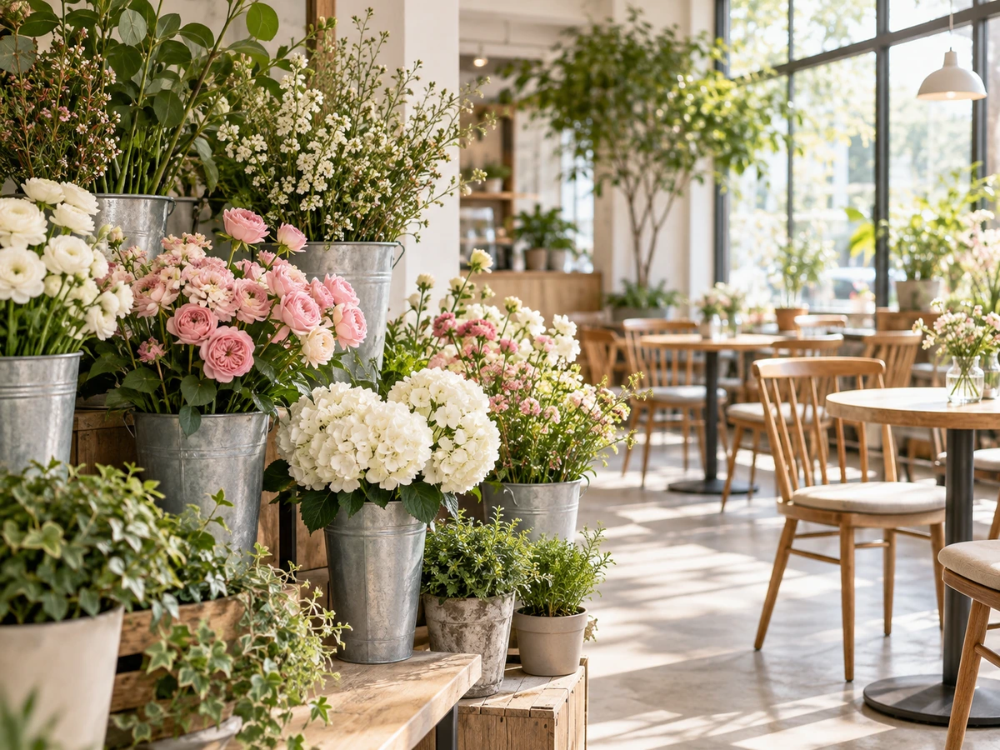

CONCEPT
花屋さんの中で、
ひと休み
Lino's Flower Cafeは、フラワーショップを併設したカフェです。 お店の中には観葉植物と花が飾られ、店内のディスプレイも素敵だと来店された方が書かれていました。
Flower & Cafe
花を選ぶ場所と、ごはんを食べる場所が、ひとつのお店に。食事のあとに花を見て帰ったり、花を選ぶついでにひと休みしたりできます。
来店された方は、店内の様子をこう書かれていました。
開放感あふれ植物に囲まれた明るい空間は居心地がとても良いです。 公開されている来店者の感想より
花と緑の中で、ゆっくりごはんを食べられるお店です。
